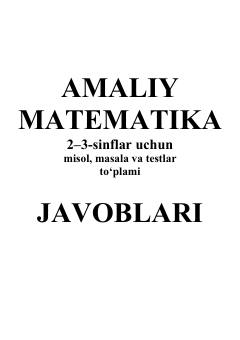

AM2-3-sinf matematika to'plami uchun test javoblari to'plami.
Ushbu qo'llanma 2-3-sinf o'quvchilari uchun mo'ljallangan amaliy matematika to'plamidagi misol, masala va testlarning javoblarini o'z ichiga oladi. Kitobda 24 ta dars bo'yicha uyga vazifalar uchun testlarning to'g'ri javoblari keltirilgan.